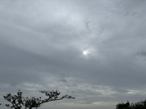
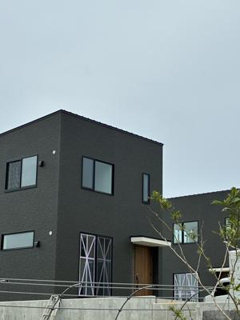
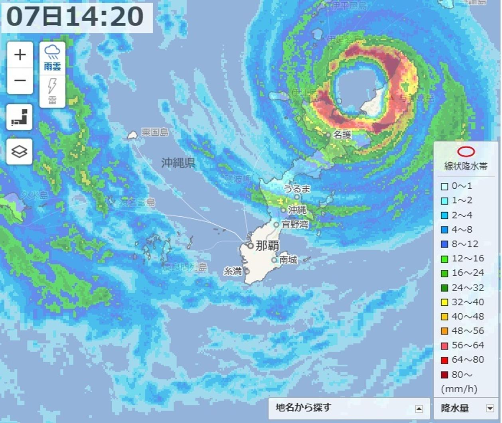
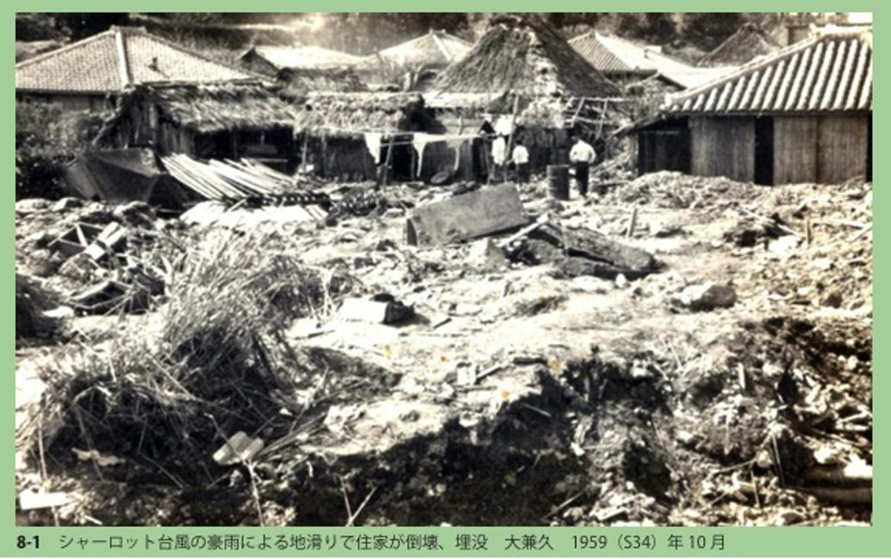

うるがいの話 ある日
最新: 台風１３号の目【うるがいの話 ある日】とは 一日だけのプログです
『うるがいの話』の最新一日だけのプログで、通信料が少なく経済的だ。カニの画像をクリックすると全ての日付が載る『うるがいの話』サイトを表示します
|
|
【うるがいの話】 うるがい(ｳﾙｶﾞｲ urugai)とは、『もずくがに』の名前でとても大きくなります。 |
|---|---|
|
|
【カミマヤーの話】 猫のことを方言でマヤーといいます。カミマヤー（kamimayaa）とは、神の猫のことです。 |
|
【たながぁの音楽】 たながぁ（ﾀﾅｶﾞｰ tanagaa）とは手長えびのことで、何種類かあり大きいのは車 エビぐらいになります。 |

|
【ぶながぁの話】 ぶながぁ(ﾌﾞﾅｶﾞｰ bunagaa)とは、赤い髪の毛、赤い身体、そして身長は１ｍ２０ｃｍ ぐらい、川の蟹を食べているの目撃された。場所は沖縄県国頭郡大宜味村のと ある村僕の隣近所に住んでいる爺さんから、聞いた話です。 |
|
|
【ギーマの話】 ギーマ(giima)とは、山原の里山に咲くスズランに似た、 花を付けます。実は食べられます、 気が付くと口の周りが紫になっています。 |
2026年08月07日 (金）台風１３号の目
16:24

きのう読んだ『ラヂオ』 阿久 悠／著より
台風の時は自分が雨戸に釘を打ったりする。もちろん、走も手伝
う。雨戸は比較的簡単だが、窓は板をＸ字に当てて釘を打つ。そ
の頃の家は大抵床下が空いていて、風がそこを通り抜け、強烈な
時には畳を持ち上げる。これは防ぎようがない。祈るだけである
場所は、１９４７年（昭和２２年）９月淡路島の話である。私の
実家でも、父親が窓に板をＸ字に当てて釘を打って、夏の暑いの
で畳をとり、床下の板の隙間から風が空いていた。
売りに出されている新築の家の窓が、バツ印の形でテープを貼っ
ていた。

台風１３号の目が、実家のところにある。

シャーロット台風の被害状況１９５９（昭和３４）年の写真であ
る。（第8章 災害の爪跡 - 大宜味村 より）

私が中学生のころまでは、山崩れの跡はまだ禿げていた（そこで
遊んでいた）。今は、林になっている。